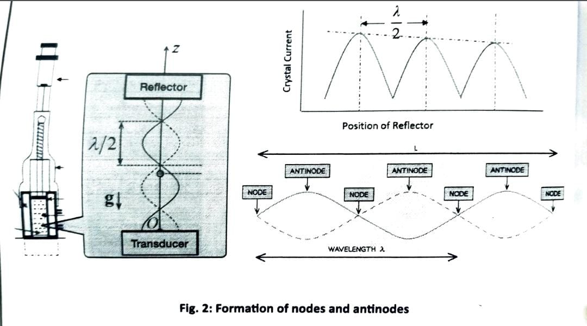
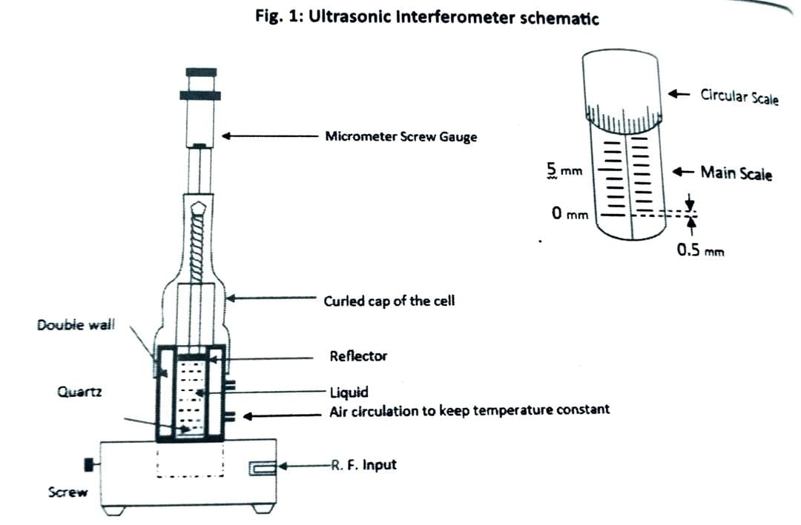

EXPERIMENT NO. 9 - ULTRASONIC INTERFEROMETER
AIM - APPARATUS - PRIOR CONCEPTS
Aim: To determine the compressibility of liquid using an ultrasonic Interferometer
Apparatus: Ultrasonic Interferometer, High-frequency generator. Liquid (water).
Prior Concepts: Sound spectrum, standing waves, the velocity of sound in the medium.
THEORY
An ultrasonic interferometer is a device that measures the velocity of ultrasonic sound in liquids with a high degree of accuracy. It works by accurately determining the wavelength of the sound in the liquid. It determines the wavelength of the sound in the liquid. Ultrasonic radiation is the use of high-frequency sound waves, with a frequency higher than 20,000 Hz, as a medium of energy transmission.
Ultrasonic waves of known frequency (f) are produced by a quartz plate fixed at the bottom of the cell. These waves are reflected by a movable metallic plate kept parallel to the quartz plate. If the separation between these two plates is exactly a whole multiple of the sound wavelength, standing waves are formed in the medium.
PROCEDURE
- Insert the cell in the square base socket and clamp it using the screw provided.
- Unscrew the knurled cap, pour the experimental liquid into the middle portion, and screw the cap back.
- Ensure water circulation through the double wall to maintain temperature.
- Connect the high-frequency generator to the cell using the provided co-axial cable.
- Adjust the generator using the 'Adj' and 'Gain' knobs to set the meter deflection.
- Move the micrometer slowly and adjust readings until consecutive maxima or minima are observed.
- Record 20 readings of consecutive maxima or minima.
- Take the average difference (d = 1/2) and determine velocity using the formula.
- Calculate compressibility using the provided equation.
Formation Of Nodes & Antinodes

Ultrasonic Interferometer Schematic

PRECAUTIONS
- Do not switch ON the generator without filling the experimental liquid in the cell.
- Do not tilt the cell after filling the liquid to avoid the flow of liquid towards the micrometer, which may rust or jam the threads.
- Remove the experimental liquid from the cell after use. Keep it cleaned and dried.
- Keep the micrometer open at 25 mm after use.
- Avoid sudden rise or fall in temperature of the circulated liquid to prevent thermal shock to the quartz crystal.
- While cleaning the cell, take care not to spoil or scratch the gold plating on the quartz crystal.
- Give the generator 15 seconds of warming-up time before taking observations.